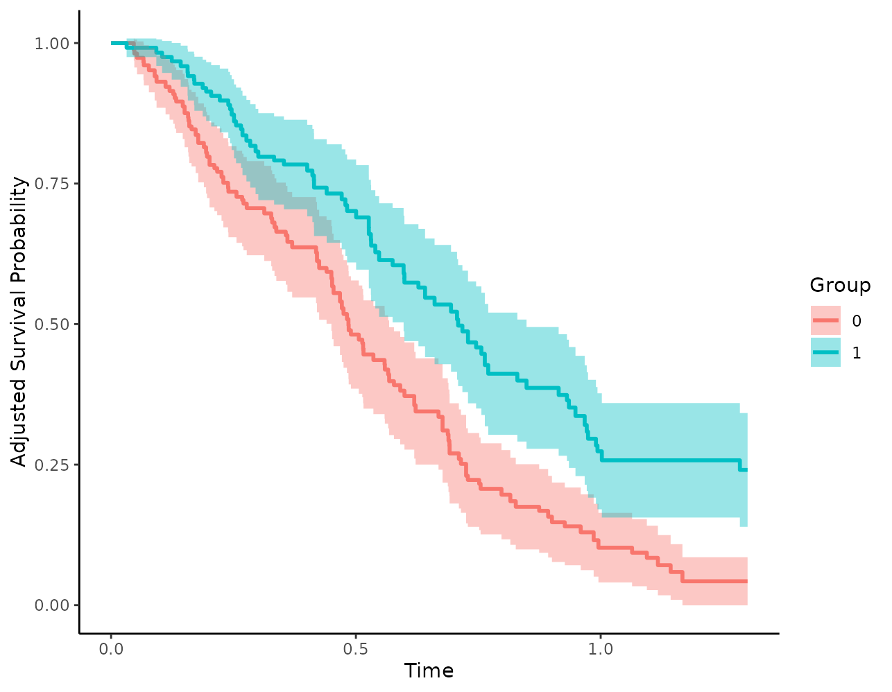
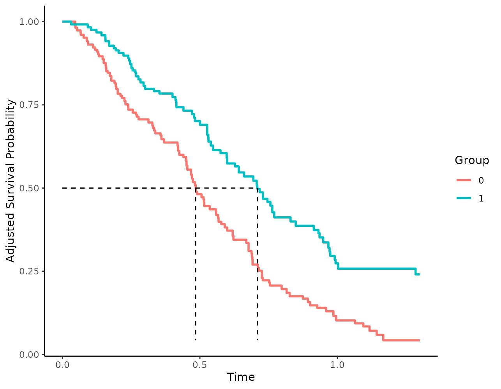
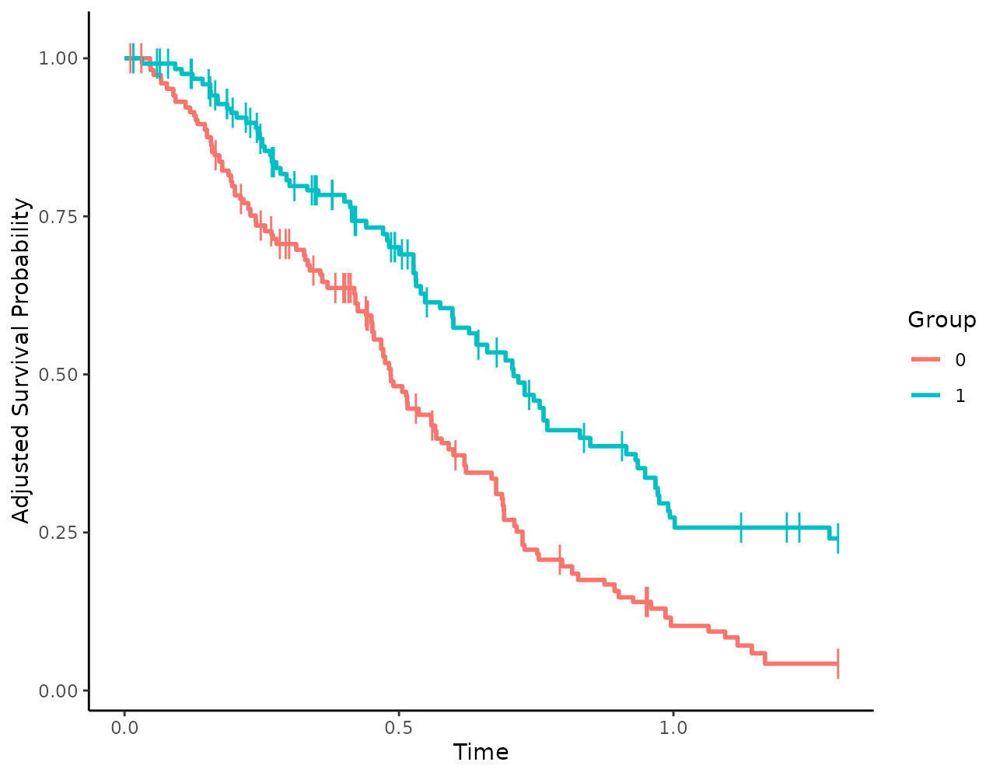
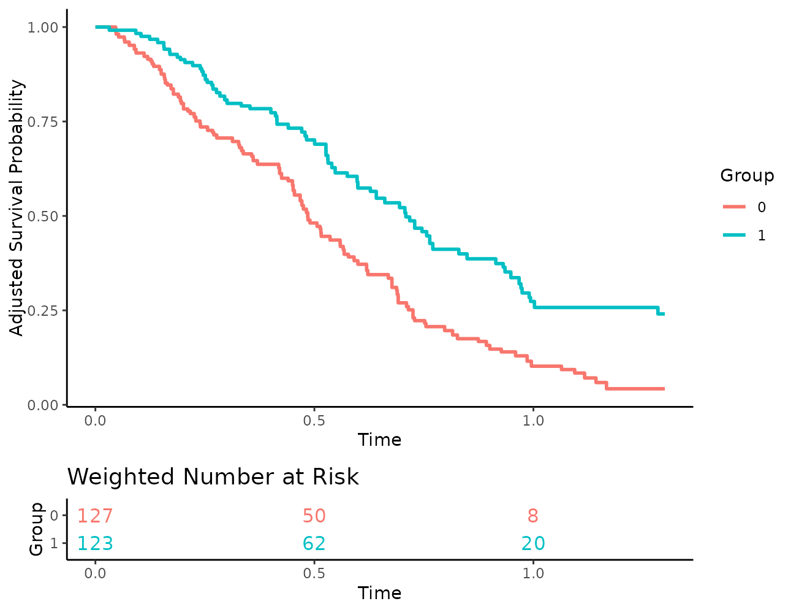
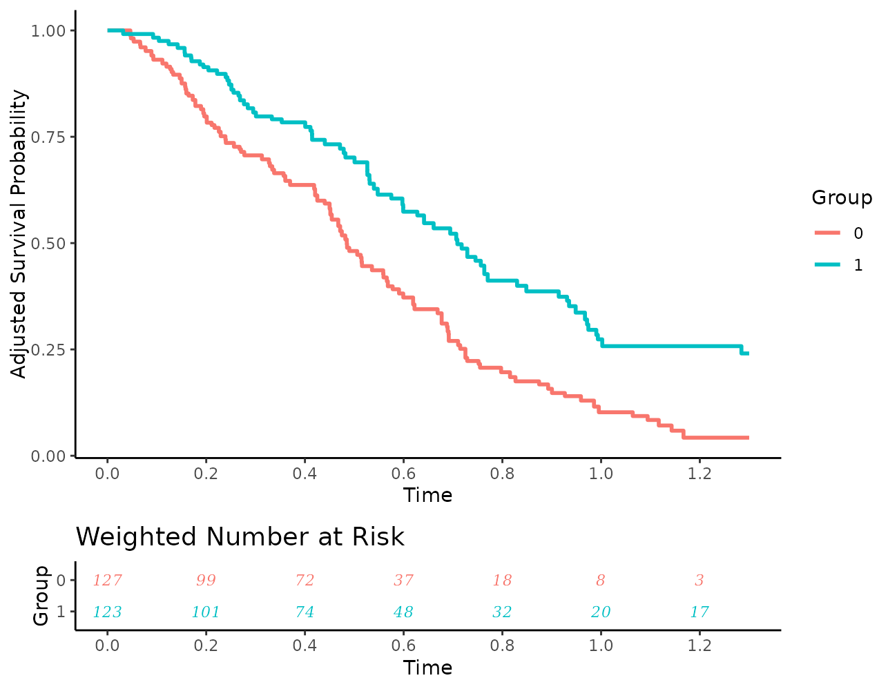
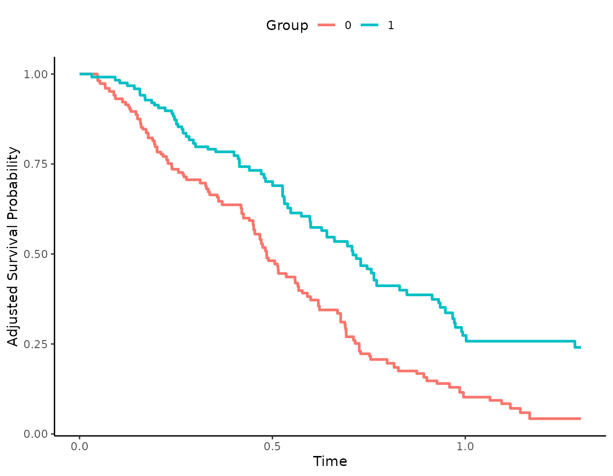

Customizing Adjusted Survival Curve Plots
Robin Denz
Source:vignettes/plot_customization.rmd
plot_customization.rmdIntroduction
This small vignette gives more details on how the
plot.adjustedsurv() function may be used to create
customized plots of the adjusted survival curves. Currently, this
function has over 60 different arguments that can be used to customize
the output, so it’s very flexible. Not all arguments will be covered
here, but the vignette may help the user to obtain a better
understanding of the supported functionality.
Example Data
To illustrate the different customization options we will use some
simulated data, which can be created easily using the
sim_confounded_surv() function included in this
package.
library(ggplot2)
library(adjustedCurves)
set.seed(42)
data <- sim_confounded_surv(n=250, max_t=1.3)
data$group <- as.factor(data$group)We will use an inverse probability of treatment weighted Kaplan-Meier estimator here to obtain the adjusted survival curves:
s_iptw <- adjustedsurv(data=data,
variable="group",
ev_time="time",
event="event",
method="iptw_km",
treatment_model=group ~ x1 + x3 + x5 + x6,
weight_method="glm",
conf_int=TRUE,
stabilize=TRUE)## Loading required namespace: WeightItNote that in a real data analysis, it would be necessary to carefully
check the underlying assumptions and to assess whether the chosen
weighting method results in reasonable confounder balance between the
groups. We also use stabilize=TRUE here to ensure that the
sum of the weights equals the sample size, which makes the use of risk
tables easier.
Calling the plot() function on this
adjustedsurv object without any argument results in the
following plot:
plot(s_iptw)
This is already fairly decent, but it could be made much more informative as illustrated below.
General Plot Aesthetics
To visually distinguish the survival curves, different colors are
used by default. By changing the linetype and
color arguments, it is however also possible to use black
and white plots instead:
plot(s_iptw, linetype=TRUE, color=FALSE)
If colors should be used, it may be usefull to change the colors
using the custom_colors argument:
When using linetypes, users can also supply custom linetypes in a similar fashion:

Titles and axis labels may also be changed using the respective arguments:
plot(s_iptw, xlab="Time in Years", ylab="S(t)",
title="This is the title", subtitle="This is the subtitle",
legend.title="Sex")
Confidence Intervals
When confidence intervals were estimated using
conf_int=TRUE or bootstrap=TRUE in the
original adjustedsurv() function call, it is of course
possible to visualize them using the plot() method as
well:
plot(s_iptw, conf_int=TRUE)## Loading required namespace: pammtools
Note that the confidence level cannot be changed here. This can only
be done directly in the adjustedsurv() function.
Median Survival Time Indicators
The median survival time is often used as a summary statistic and to
compare different survival curves. In this package, it may be calculated
using the adjusted_surv_quantile() function. However, it
may also make sense to add some indicator lines to the plot to visually
help the reader to read off the median survival time from the plot as
well. This can be done using the median_surv_lines
argument:
plot(s_iptw, median_surv_lines=TRUE)
The drawn lines may also be customized. Below we make the lines
thicker, change their color and change their linetype from
"dashed" to "dotdash":
plot(s_iptw, median_surv_lines=TRUE, median_surv_linetype="dotdash",
median_surv_size=0.7, median_surv_color="grey")
It is also possible to use other survival time quantiles by changing
the median_surv_quantile argument:
plot(s_iptw, median_surv_lines=TRUE, median_surv_quantile=0.4)
Censoring Indicators
In standard Kaplan-Meier plots, the timing of censored observations
is often added to the plot as well. This can be done in this package as
well, using the censoring_ind argument. We could, for
example, add small vertical lines to show the censored observations:
plot(s_iptw, censoring_ind="lines")
Alternatively, points of any shape could be added as well:
plot(s_iptw, censoring_ind="points", censoring_ind_shape=3,
censoring_ind_size=2)Risk Tables
First, let’s call the plot() function with the default
risk table arguments:
plot(s_iptw, risk_table=TRUE)## Loading required namespace: cowplot
Changing the content of risk tables
Since we are using a weighted Kaplan-Meier estimator, the weighted
number at risk is shown by default. We could use the unweighted number
at risk by setting risk_table_use_weights=FALSE, but this
wouldn’t make much sense. Instead of using the weighted number at risk,
we can also use the weighted number of cumulative events:
plot(s_iptw, risk_table=TRUE, risk_table_type="n_events")
or the weighted cumulative number of censored observations:
plot(s_iptw, risk_table=TRUE, risk_table_type="n_cens")
By setting risk_table_stratify=TRUE, we are also able to
stratify the risk table by the different levels in
variable:
plot(s_iptw, risk_table=TRUE, risk_table_stratify=TRUE)Since weights are used here, there is no guarantee that the number of
people at risk are integer values. By default the numbers are rounded to
one digit to make this clear, but we can also set the
risk_table_digits argument to 0 to round them to the
nearest integer, which may be a little less confusing for some
people:
plot(s_iptw, risk_table=TRUE, risk_table_stratify=TRUE,
risk_table_digits=0)
The risk tables only show numbers at the break points of the x-axis
shown in the survival curve plot, to make everything align nicely. To
get more numbers at more points in time, we can simply augment the
x_breaks or x_n_breaks arguments, like
this:
plot(s_iptw, risk_table=TRUE, risk_table_stratify=TRUE,
risk_table_digits=0, x_n_breaks=10)
Changing aesthetic parameters
The size and look of the numbers may be changed as well:
plot(s_iptw, risk_table=TRUE, risk_table_stratify=TRUE,
risk_table_digits=0, x_n_breaks=10, risk_table_size=3,
risk_table_family="serif", risk_table_fontface="italic")
Additionally, users may turn off the coloring of the numbers:
plot(s_iptw, risk_table=TRUE, risk_table_stratify=TRUE,
risk_table_digits=0, x_n_breaks=10,
risk_table_stratify_color=FALSE)Or use different colors:
plot(s_iptw, risk_table=TRUE, risk_table_stratify=TRUE,
risk_table_digits=0, x_n_breaks=10,
risk_table_custom_colors=c("brown", "orange"))
The title and axis labels may of course also be changed or removed:
plot(s_iptw, risk_table=TRUE, risk_table_stratify=TRUE,
risk_table_digits=0, x_n_breaks=10,
risk_table_title="Weighted Number of people at risk",
risk_table_title_size=10, risk_table_title_position="middle",
risk_table_ylab=NULL)
Internally, separate plots are created for the survival curves and
for the risk table and put together afterwards using the
plot_grid() function of the cowplot package.
Because of this, users may also set different ggplot2
themes for the plots:
plot(s_iptw, risk_table=TRUE, risk_table_stratify=TRUE,
risk_table_digits=0, x_n_breaks=10,
risk_table_theme=ggplot2::theme_classic(),
gg_theme=ggplot2::theme_minimal())
Additional customization options
Usually, the plot() function returns a standard
ggplot2 object that may be modified using standard
ggplot2 syntax. This, however, is no longer the case when
using risk tables, because the output now consists of two plots that
have been put together.
This means that this code works fine:

While the following code does not work:

To still allow users to use all standard ggplot2 options
when using risk tables we added two additional arguments:
additional_layers and
risk_table_additional_layers. Users may pass a list of
objects that can be added to a ggplot2 object to either of
these arguments. All objects in the list passed to
additional_layers will be added to the survival curve plot
before putting it together with the risk table plot. Similarly, all
objects in the risk_table_additional_layers list will be
applied to the risk table plot.
The preceding example could be fixed using the following code:
more_stuff <- list(theme(legend.position="top"))
plot(s_iptw, risk_table=TRUE, additional_layers=more_stuff)In this particular case, we could have also simply set the
legend.position to top, but this of course only works for
arguments directly supported by the plot() method. Using
the arguments mentioned above, we can do quite a bit more, such as
adding more geoms:
more_stuff <- list(geom_hline(yintercept=0.7))
plot(s_iptw, risk_table=TRUE, additional_layers=more_stuff)
Which also works for the risk table subplot using the other argument:
# remove x-axis ticks from risk table for some reason
more_stuff <- list(theme(axis.ticks.x=element_blank()))
plot(s_iptw, risk_table=TRUE, risk_table_additional_layers=more_stuff)
Putting it all together
In this particular case, we would probably use something similar to the following code to create a decent output:
plot(s_iptw, conf_int=TRUE, censoring_ind="lines", risk_table=TRUE,
risk_table_stratify=TRUE, risk_table_digits=0, x_n_breaks=10,
risk_table_title_size=11, median_surv_lines=TRUE,
gg_theme=theme_bw(), risk_table_theme=theme_classic(),
legend.position="top", custom_colors=c("blue", "red"),
xlab="Time in Years")
Of course this is just one of many possibilities.